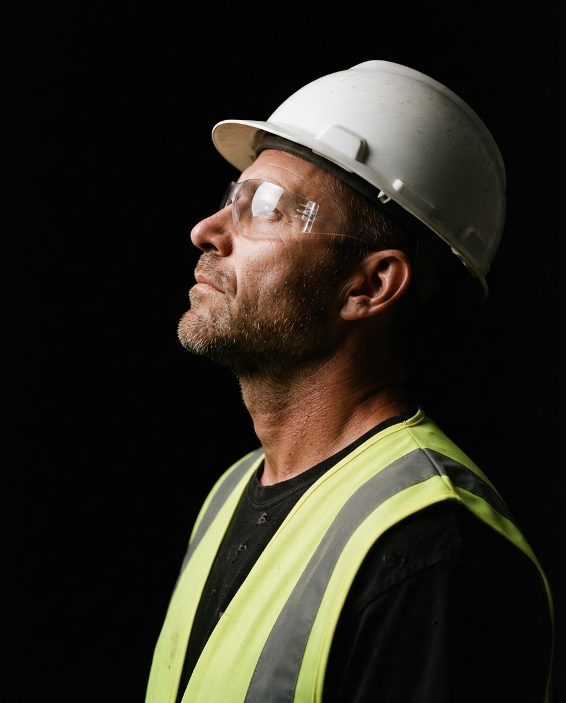

Una marca industrial a la altura de lo que protege.
Cliente
Crisger
Sector
Seguridad industrial
Alcance
Identidad visual
Manual de marca
Piezas gráficas

Crisger
Crisger trabaja en seguridad industrial, un rubro técnico donde la confianza se gana antes de la primera reunión. La marca tenía que verse sólida, clara y profesional en cualquier lugar.
Imagen 2 del proyectoImagen 3 del proyecto
El punto de partida
En seguridad, una marca desprolija genera dudas sobre el producto. Hacía falta un sistema que se viera igual de firme en un casco, un catálogo o una presentación.
La idea
Una identidad sobria y directa, con reglas claras para que se use igual en todos lados. El manual de marca deja todo resuelto: logo, colores, tipografía y cómo aplicarlos.
Imagen 4 del proyecto
Clara, firme y confiable. Como el trabajo que hace.